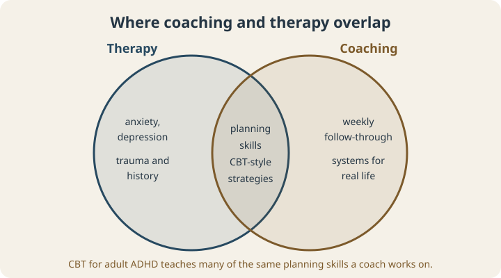
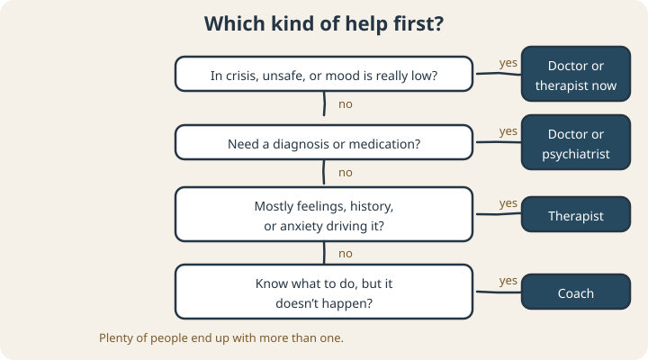

September 23, 2026
ADHD Coach vs. Therapist: Which One Do You Need?

You’ve decided you want help with ADHD. Good. Then you start looking and immediately hit a wall of titles: therapist, psychologist, psychiatrist, counselor, ADHD coach, executive function coach, life coach. They all sound helpful. They don’t all do the same job.
This post is about the two people get confused most often, the ADHD coach and the therapist: what each one does, where they overlap, what the research supports, and how to decide where to start.
The quick version
- A therapist is a licensed mental health professional. Therapy can address anxiety, depression, trauma, relationships, and the emotional side of living with ADHD. Some therapists also teach practical ADHD skills.
- An ADHD coach works on day-to-day follow-through: planning, starting tasks, managing time, building routines, and sticking with them week after week. Coaches don’t diagnose or treat mental health conditions.
- A doctor or psychiatrist handles diagnosis and medication. Neither a coach nor most therapists can prescribe.
Many people end up with more than one of these, and that’s often the best setup.
Where they overlap
The line between therapy and coaching is blurrier than most people expect, because one of the best-studied therapies for adult ADHD is a skills-focused form of cognitive behavioral therapy (CBT).

In a 2010 trial, adults with ADHD who were already taking medication but still struggling received 12 individual sessions of either CBT or relaxation training. The CBT sessions taught things like calendar and task-list systems, breaking big tasks into steps, and handling distractions. People in the CBT group did significantly better, and about two-thirds had a meaningful drop in symptoms, compared with about one-third in the relaxation group. The gains held up at 6 and 12 months.1
Another 2010 trial tested a 12-week group program built specifically around time management, organization, and planning. Compared with supportive therapy, it led to bigger improvements in inattention, whether rated by the participants themselves or by an evaluator who didn’t know which group they were in.2
Read those descriptions again and they sound a lot like coaching. That’s the overlap. The difference is mostly in who delivers it, what else they’re trained to handle, and how the work is structured.
How they differ in practice
Training and licensing
Therapists are licensed by the state and trained to assess and treat mental health conditions. Coaching isn’t licensed. Good ADHD coaches have ADHD-specific training, often through programs accredited by the International Coaching Federation (ICF) or the Professional Association of ADHD Coaches (PAAC), but the title itself isn’t protected, so it’s worth asking.
What a session focuses on
Therapy often makes room for the past and for feelings: why a pattern started, what it brings up, how anxiety or shame is feeding it. Coaching tends to stay on the present week. What’s the plan, what got in the way, what’s the next experiment?
Between sessions
Coaching often includes check-ins between sessions, because that’s where ADHD plans tend to slip. Therapy usually happens in the session itself.
Insurance and cost
Therapy is often covered by insurance, at least partly. Coaching usually isn’t, so it’s typically paid out of pocket.
What the research says about coaching
Coaching research is younger and smaller than the therapy research. Studies so far have been encouraging, mostly with college students: one evaluation of 148 students found improvements in study and learning strategies, self-esteem, and satisfaction with school and work after an 8-week program.3 A 2018 review counted 19 outcome studies of ADHD coaching and noted that the field still needs larger, controlled trials.4 We go through the coaching evidence in more detail in What Is ADHD Coaching?
Which one should you start with?

- Start with a doctor or therapist if you’re in crisis, feeling unsafe, or your mood has been very low for weeks. If you’re in the U.S. and in crisis, you can call or text 988 any time.
- Start with a doctor or psychiatrist if you think you might have ADHD and haven’t been evaluated, or want to talk about medication.
- Start with a therapist if anxiety, depression, trauma, or deep shame seems to be driving the struggle.
- Start with a coach if you mostly know what you need to do, your mental health is reasonably stable, and the problem is that plans keep falling apart in daily life.
- Consider both if you’re in therapy and understand yourself much better but your days still run the same way. Coaching can turn the insight into routines.
Questions to ask either one
- What experience do you have with adult ADHD specifically?
- What does a typical session look like?
- How will we know if this is working?
- What’s outside your scope, and who would you refer me to?
A good professional of either kind will answer that last question without hesitating.
Still not sure?
That’s normal, and it doesn’t have to be decided alone. Tell us what keeps going wrong and we’ll give you a straight read on whether coaching fits, or whether a therapist or doctor is the better first call, before anyone books anything.
Scope note: ExEF offers skills-based coaching, which isn’t therapy, diagnosis, or medical treatment and isn’t a substitute for them.
Sources
- Safren, S. A., Sprich, S., Mimiaga, M. J., Surman, C., Knouse, L., Groves, M., & Otto, M. W. (2010). Cognitive behavioral therapy vs relaxation with educational support for medication-treated adults with ADHD and persistent symptoms: A randomized controlled trial. JAMA, 304(8), 875–880. doi.org/10.1001/jama.2010.1192
- Solanto, M. V., Marks, D. J., Wasserstein, J., Mitchell, K., Abikoff, H., Alvir, J. M. J., & Kofman, M. D. (2010). Efficacy of meta-cognitive therapy for adult ADHD. American Journal of Psychiatry, 167(8), 958–968. doi.org/10.1176/appi.ajp.2009.09081123
- Prevatt, F., & Yelland, S. (2015). An empirical evaluation of ADHD coaching in college students. Journal of Attention Disorders, 19(8), 666–677. doi.org/10.1177/1087054713480036
- Ahmann, E., Tuttle, L. J., Saviet, M., & Wright, S. D. (2018). A descriptive review of ADHD coaching research: Implications for college students. Journal of Postsecondary Education and Disability, 31(1), 17–39. eric.ed.gov/?id=EJ1182373